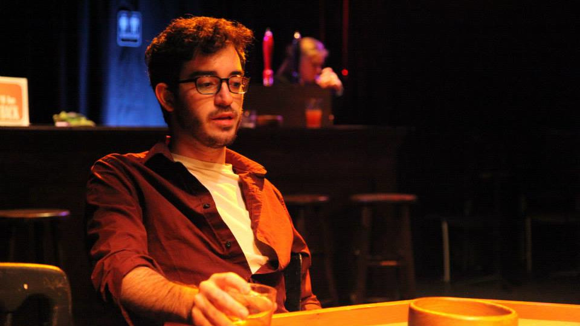
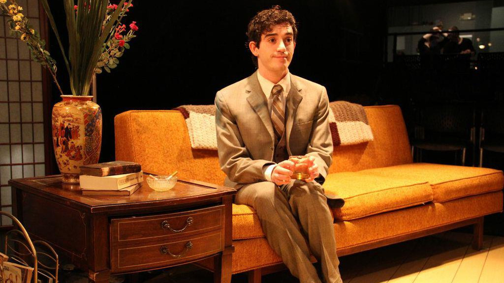
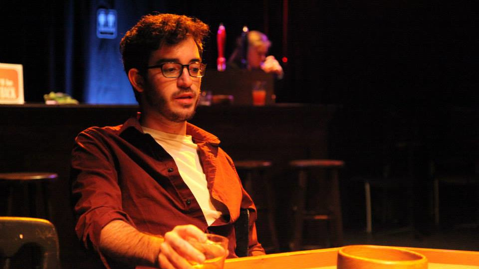
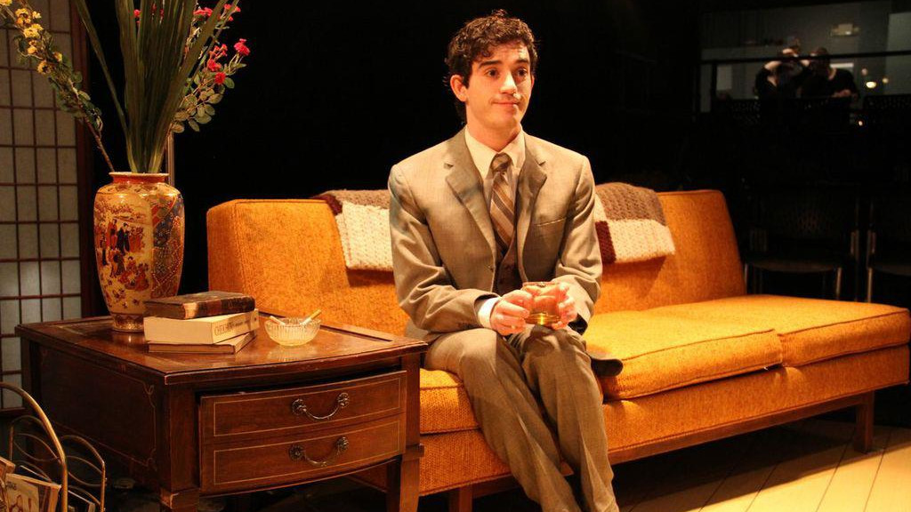

My career as an Actor and Performer up until this point has taken me all over. I have lived all and worked on over the east coast for the past 8 years, mainly between Philadelphia and NYC. I've toured the country with a national tour and even played Off-Broadway! Even though I'm extremely excited to become a software developer and to change the trajectory my career has taken me, the fine arts will always be a big part of my life and my experiences will inform my perspective as a developer!
Want to see some of my work?
I've been learning Software Development as a hobby for a couple of years now! It started out pretty simple, but I've dabbled in a verity of basic projects. I'm currently enrolled in the Flatiron School Software Developer Intensive to turn this hobby into the foundation for a new career.
Lately I've been dipping my toes in the generative art scene and have played around some. This gif shows random point generated fractals based on The Sierpiński triangle. When the lines of symmetry around the axis are a whole number, you can see distinct patterns in the animation. I took the images between 1 and 8 sides and combined them into this gif.